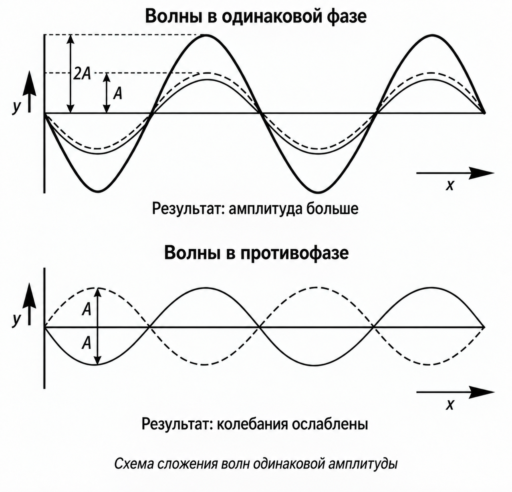
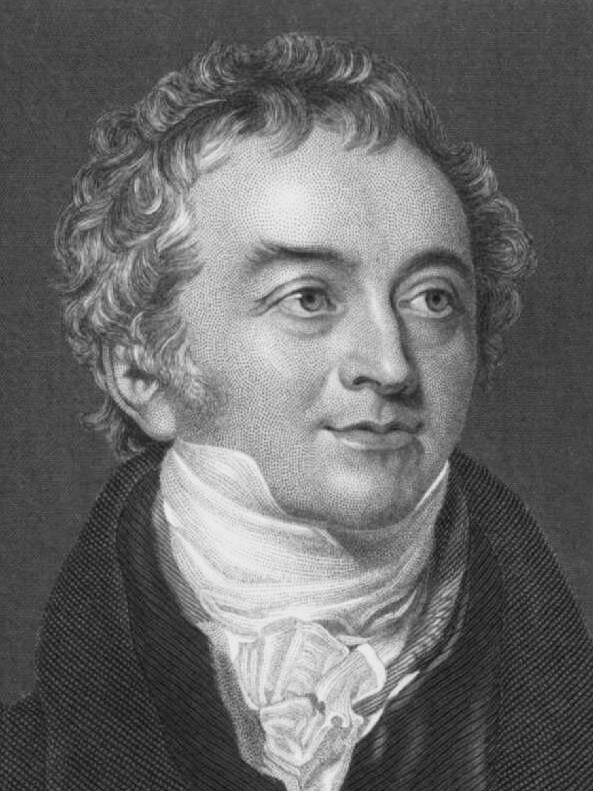
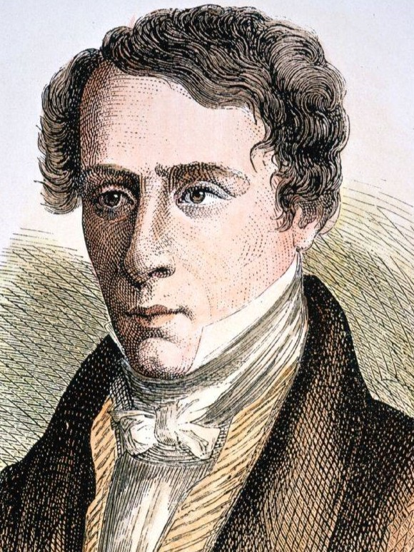
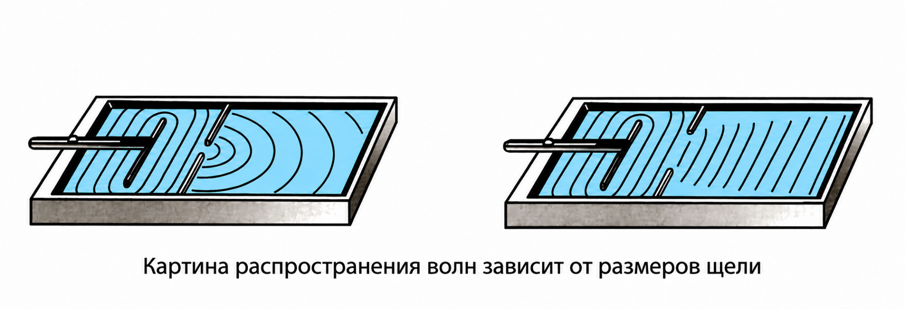
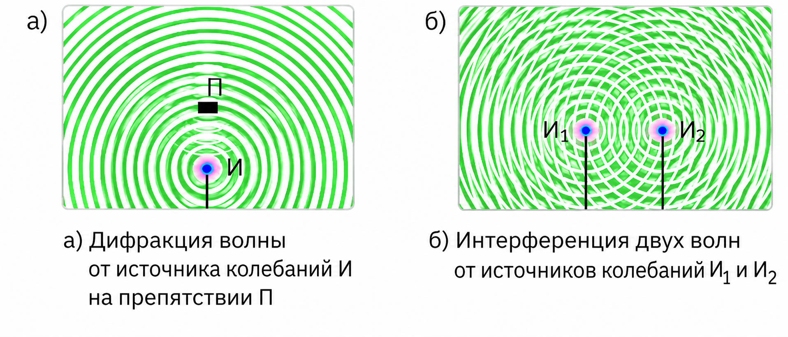
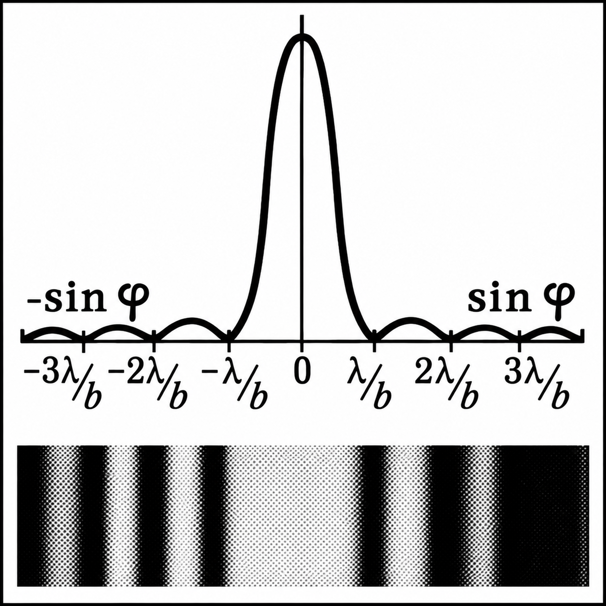
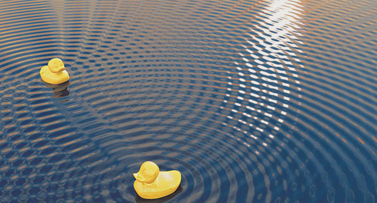
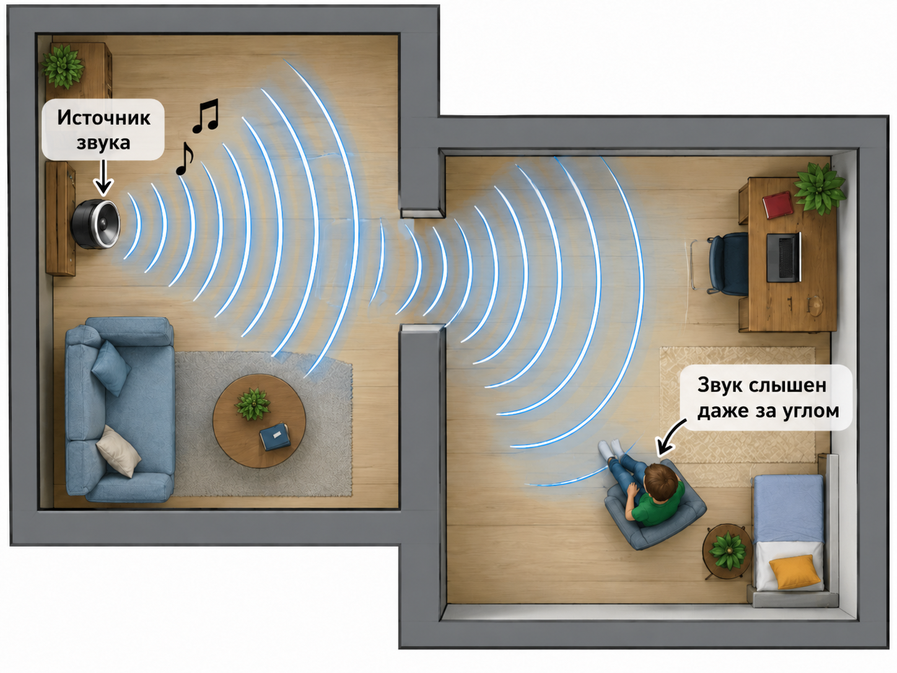
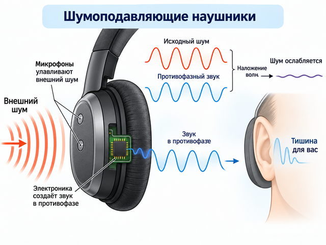
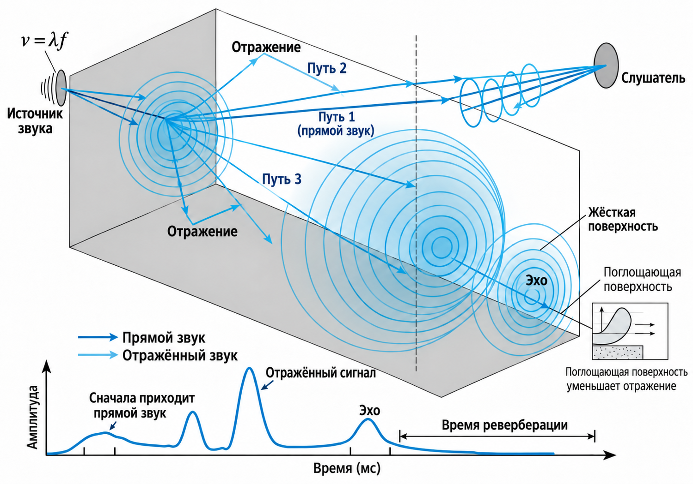

Интерференция волн
Интерференция — устойчивое усиление или ослабление колебаний, возникающее при наложении когерентных волн.
Когерентные волны имеют одинаковую частоту и постоянную разность фаз. Благодаря этому в каждой точке пространства волны складываются одним и тем же образом: одни области остаются усиленными, а другие — ослабленными.
Если гребень одной волны приходит одновременно с гребнем другой, колебания усиливаются. Если гребень одной волны совпадает с впадиной другой, колебания ослабляются. Это проявление принципа суперпозиции: при встрече волн результирующее смещение среды равно сумме смещений, создаваемых каждой волной отдельно.

Условия максимума и минимума
Результат сложения удобно определять по разности хода \(\Delta r\) — разности расстояний от источников волн до рассматриваемой точки.
При разности хода, равной целому числу длин волн, волны приходят в одинаковой фазе и усиливают друг друга. При разности хода, равной нечётному числу полуволн, они приходят в противофазе и ослабляются.
Например, если от двух синхронно работающих источников до точки наблюдения волны проходят пути, отличающиеся на одну длину волны, в этой точке возникает максимум. Если пути отличаются на половину длины волны — минимум.
Как изучали волновые явления
Интерференцию и дифракцию сначала исследовали прежде всего на световых волнах. Эти исследования помогли учёным понять общие свойства волн, которые проявляются также у звука, волн на воде и других механических волн.

Портрет учёного
Портрет учёногоТе же закономерности складывания волн можно наблюдать на воде и слышать в звуковых волнах.
Дифракция волн
Дифракция — отклонение волны от прямолинейного распространения: волна огибает препятствие или расходится после прохождения через отверстие.
Дифракция особенно заметна, когда размеры препятствия или отверстия сравнимы с длиной волны. Если отверстие намного шире длины волны, волна за ним распространяется почти прямо. Если размеры близки, волна заметно расходится в стороны.
Дифракцию объясняет принцип Гюйгенса–Френеля: каждую точку волнового фронта можно рассматривать как источник вторичных волн. Эти волны накладываются и формируют новый волновой фронт. За узкой щелью фронт становится расходящимся, а за препятствием волна частично проникает в область геометрической тени.


Дифракционная картина щели
При прохождении через узкую щель волна расходится и за ней образуются области усиления и ослабления. Для качественного понимания достаточно помнить: центральный максимум наиболее выражен, а по сторонам от него располагаются более слабые максимумы.

Интерференция и дифракция вокруг нас
Волны на воде
Если два источника одновременно создают рябь, круговые волны пересекаются. В одних местах гребни встречаются с гребнями и усиливаются, в других гребень встречается с впадиной. Так возникает чередование спокойных и сильно колеблющихся участков.

Звук за углом
Звуковая волна может огибать дверной проём или край стены. Поэтому голос или музыка слышны, даже если источник не виден. Эффект заметнее, когда размер проёма сравним с длиной звуковой волны.

Шумоподавляющие наушники
Микрофоны улавливают внешний шум, а электроника создаёт звук с противоположной фазой. При наложении волн шум ослабляется. Такой принцип называется активным шумоподавлением.

Звук в помещении
Звуковые волны, отражённые от стен, накладываются на прямой звук. В разных точках комнаты отдельные частоты могут звучать громче или тише из-за интерференции.
